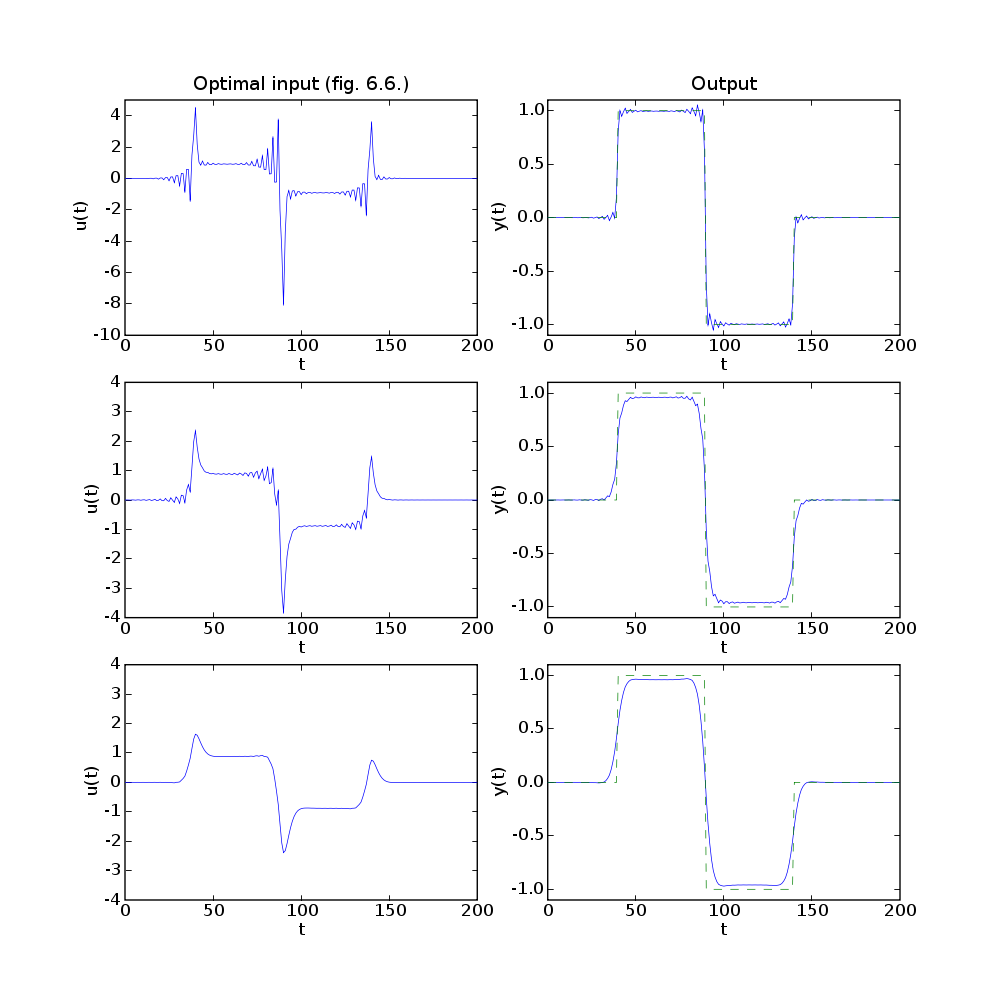

# Figure 6.6, page 309.
# Input design.
from math import cos, sqrt
from cvxopt import lapack, matrix
try: import pylab
except ImportError: pylab_installed = False
else: pylab_installed = True
m, n = 201, 201
# Jtrack = 1/n * ||H*u-ydes||_2^2.
H = matrix(0.0, (m,m))
for t in range(m):
H[t::m+1] = (1.0/9.0) * .9**t * (1.0 - 0.4 * cos(2*t))
ydes = matrix( 40*[0.0] + 50*[1.0] + 50*[-1.0] + 61*[0.0] )
# Jmag = 1/n * ||I*u||_2^2
I = matrix(0.0, (n,n))
I[::n+1] = 1.0
# Jder = 1/(n-1) * ||D*u||_2^2
D = matrix(0.0, (n-1,n))
D[::n] = -1.0
D[n-1::n] = 1.0
AA = matrix(0.0, (m + 2*n - 1, n))
bb = matrix(0.0, (m + 2*n - 1, 1))
AA[:n,:] = H
bb[:n] = ydes
delta, eta = 0.0, 0.005
AA[n:2*n,:] = sqrt(eta)*I
AA[2*n:,:] = sqrt(delta)*D
x = +bb
lapack.gels(+AA, x)
u1 = x[:n]
if pylab_installed:
pylab.figure(1, facecolor='w', figsize=(10,10))
ts = matrix(range(n), tc='d')
pylab.subplot(321)
pylab.plot(ts, u1, '-')
pylab.xlabel('t')
pylab.ylabel('u(t)')
pylab.axis([0, 200, -10, 5])
pylab.title('Optimal input (fig. 6.6.)')
pylab.subplot(322)
pylab.plot(ts, H*u1, '-', ts, ydes, 'g--')
pylab.xlabel('t')
pylab.ylabel('y(t)')
pylab.axis([0, 200, -1.1, 1.1])
pylab.title('Output')
delta, eta = 0.0, 0.05
AA[n:2*n,:] = sqrt(eta)*I
AA[2*n:,:] = sqrt(delta)*D
x = +bb
lapack.gels(+AA, x)
u2 = x[:n]
if pylab_installed:
pylab.subplot(323)
pylab.plot(ts, u2, '-')
pylab.xlabel('t')
pylab.ylabel('u(t)')
pylab.axis([0, 200, -4, 4])
pylab.subplot(324)
pylab.plot(ts, H*u2, '-', ts, ydes, 'g--')
pylab.ylabel('y(t)')
pylab.xlabel('t')
pylab.axis([0, 200, -1.1, 1.1])
delta, eta = 0.3, 0.05
AA[n:2*n,:] = sqrt(eta)*I
AA[2*n:,:] = sqrt(delta)*D
x = +bb
lapack.gels(+AA, x)
u3 = x[:n]
if pylab_installed:
pylab.subplot(325)
pylab.plot(ts, u3, '-')
pylab.xlabel('t')
pylab.ylabel('u(t)')
pylab.axis([0, 200, -4, 4])
pylab.subplot(326)
pylab.plot(ts, H*u3, '-', ts, ydes, 'g--')
pylab.ylabel('y(t)')
pylab.xlabel('t')
pylab.axis([0, 200, -1.1, 1.1])
pylab.show()